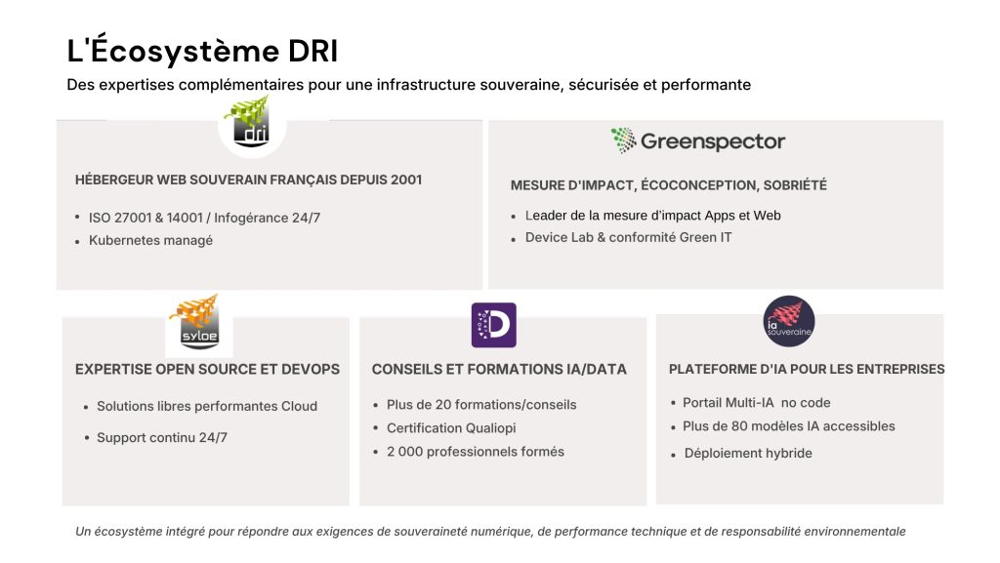
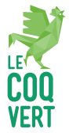

D.R.I. Group
Greenspector is a subsidiary of the D.R.I. Group
D.R.I. (Digital Rural Informatique) is a sovereign French cloud host with the best PUE on the market (1.13). With 80 employees and €80M in group revenue, DRI brings together complementary expertise around responsible digital.
The group also includes:
- Syloe — DevOps specialist
- Data Inceptio — AI training
- Swiftask — AI developer
- IA Souveraine — sovereign multi-AI no-code portal
The DRI Group brings together complementary, independent expertise: sovereign hosting, agentic AI, data, open source, ecodesign, consulting and training, while delivering secure, high-performance and sustainable digital transformation.
Each entity contributes to a coherent, integrated ecosystem, giving public and private organisations technological sovereignty, skills development and controlled environmental impact.

Vision & positioning
Sovereign, high-performance and responsible digital
The DRI Group embodies sovereign digital: technological independence, performance and environmental responsibility. A credible French alternative to international solutions.
Eco-responsibility
Datacenters without air conditioning, impact measurement and systematic ecodesign.
Digital excellence
Operational excellence, guaranteed availability, continuous innovation.
Sovereignty
100% French infrastructure and data, full control of the technology chain.
Greenspector
Who are we?
Pioneer in responsible digital
15 years of expertise measuring and reducing the carbon footprint of your digital services, with an experienced engineering team.
Real-world measurement
Energy consumption, performance and environmental impact of every mobile/web app, on physical devices.
Unique Device Lab in Europe
Over 100 Android and iOS smartphones & tablets across generations — premium, mid-range and entry-level — for 100% reliable testing.
Self-service SaaS
Launch your ecodesign campaigns in a few clicks and track KPIs (kWh saved, CO₂ avoided, load times).
DRI partnership
ISO 14001 certified sovereign host — eco-responsible, secure infrastructure and the best market PUE: 1.13.
Responsible mobile AI
Accelerating AI development while controlling energy impact, with test bench booking for battery drain campaigns.
Greenspector Studio benefits
- Reduced datacenter energy consumption
- Reduced battery drain
- Optimised load and journey times
- Green-IT, RGESN and RGAA compliance
- Publishing the Greenspector eco-score
100+ organisations
Solution adopted by over 100 public and private organisations — over 165 million smartphone users.
Want to turn your applications into environmental assets? Contact us.
Mission & values
How does Greenspector contribute to the common good?
Our vision: contribute to a virtuous and responsible digital world.
Our mission: "From device to application, measure the frugality and performance of your digital services."
Our 4 values — ACIE
- A — Act for the environment, the planet and the common good
- C — Contribute to frugal, sovereign and high-performance digital
- I — Innovate to deliver fast, user-friendly and cost-effective measurement solutions
- E — Listen to the market, clients, employees and stakeholders
CSR
Our CSR policy
Reduce our clients' impact
Our ambition is to help clients reduce the environmental impact of their digital services. Over 100 million Europeans have indirectly benefited from our services.
Raise awareness
Talks at schools, meetups and conferences. Alliances with Ademe, ADN Ouest, French Telecom Federation, EVEA, I-CARE, Norsys, Constellation and the Green Compagnons network.
Share best practices
Contribution to GR491, RGESN, 115 web ecodesign best practices and Designers Éthiques frameworks, with RGAA support.
Access for associations
Greenspector Studio at half price for associations and certain scientific projects (e.g. VU Amsterdam), via Mobile Efficiency Index.
Transparent governance
- Financial and remuneration transparency
- Majority-based collegial decisions
- Remote work for everyone, including interns
- Autonomy and goal-based management
- Transway partnership for low-carbon mobility
Responsible purchasing
Our responsible purchasing policy
Opp Shop Nantes
Area: refurbished smartphones
Why: reduced electronic waste
Modixia
Area: refurbished electronic components
Why: flexibility, responsiveness and green attitude
Telecoop
Area: mobile subscriptions
Why: cooperative operator, green energy
DRI
Area: sovereign cloud hosting (PUE = 1.13)
Why: energy optimisation, data sovereignty
IA Souveraine
Area: eco-responsible AI services
Why: data sovereignty
Certification
Coq Vert BPI certification
Greenspector joins the community of 3,500 committed companies certified Coq Vert BPI to share inspiring environmental best practices.
